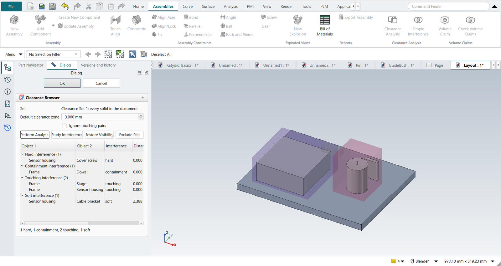
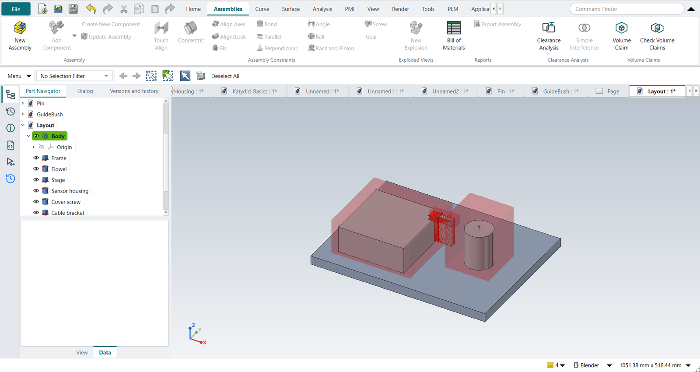

Assembly clearance and volume claims
Assembly Clearance
NX checks an assembly for interferences with Assembly Clearance: a clearance set saved with the assembly, run again after every design change, with the results in the Clearance Browser. FreeCAD has only Part › Check Geometry and booleans between two objects. NX-Style adds both NX commands, on the Assemblies tab (Clearance Analysis group) and the Analysis tab.
- Simple Interference
-
Select two bodies. The Information window says whether they interfere; a hard interference adds a body of the common volume.
- Clearance Analysis
-
With nothing selected, a new clearance set of every solid in the document; with objects selected, of those; with a clearance set selected, that set again. The Clearance Browser opens:
-
Default clearance zone: pairs closer than this are soft interferences.
-
Perform Analysis checks every pair; Ignore touching pairs leaves out mating faces.
-
The interferences, grouped by kind, with the distance, the penetration depth and the interference volume, and their status against the last run: New, Unchanged, Changed or Gone.
-
Study Interference shows only the selected pair and its interference volume (red); Restore Visibility brings the rest back.
-
Exclude Pair adds a rule to the set and runs it again.
-

| Interference | When |
|---|---|
Hard |
The objects intersect. |
Containment |
One object is completely inside the other. |
Touching |
They touch, with no common volume. |
Soft |
They do not touch but are closer than the clearance zone. |
The set is a document object (Clearance Set in the Part Navigator).
Its properties are what NX’s Clearance Analysis dialog holds: Objects (empty: every solid), SecondObjects (two collections: the first checked against the second only), ClearanceZone, IgnoreTouching and PairRules, one rule per line: Bolt|Plate=exclude leaves a pair out, Shaft|Bushing=0.5 gives it its own zone.
Double-click the set to run it again.
The penetration depth is the smallest extent of the interference volume along its principal axes: for two overlapping blocks, how far one has to move out of the other.
Parts are taken where their assembly puts them. A link or a body inside an assembly or an App::Part that has its own placement counts at that placement.
A hidden part that links only show (the source of the instances) is not counted as a part of its own.
Clearance and volume claims both do this. Before 2026-10-14 they used the part’s own placement only, and a part in a moved assembly was checked where it would be without the move.
Volume claims
In a high-tech system layout every module owns a volume: the space reserved for it (a space reservation, ruimteclaim). Its parts must stay inside, other modules' parts must stay out, and two claims must not share space, because then one space has been promised twice. Keep-out claims reserve space that no part may enter: a beam path, a service access, the sweep of a moving part.
- Assemblies › Volume Claim
-
Select the module’s parts first: they become the claim’s members and the claim starts as their bounding box, a little larger. Type the owner, the size and corner, and a margin: members keep it to the claim’s boundary, other parts keep it to the claim. Keep-out claims have no members. A claim can also take its shape from another object (its Source property), such as a sketch extruded by the system architect.
- Check Volume Claims
-
Every claim against every part, and every claim against every other claim:
Finding Means OVERLAP
Two claims share space.
OUTSIDE
A member sticks out of its claim (or into its margin).
INTRUSION
Another owner’s part enters a claim or its margin, or any part enters a keep-out.
unclaimed
A part belongs to no claim.
The offending volumes are drawn in red (Claim violations), the claims turn red, and each claim’s Status and Findings properties keep the result.

Claims are translucent boxes in each owner’s colour, kept in the Volume Claims folder; hide the folder for a clean view of the parts. NX has no volume claims: its Assembly Clearance checks parts against parts.